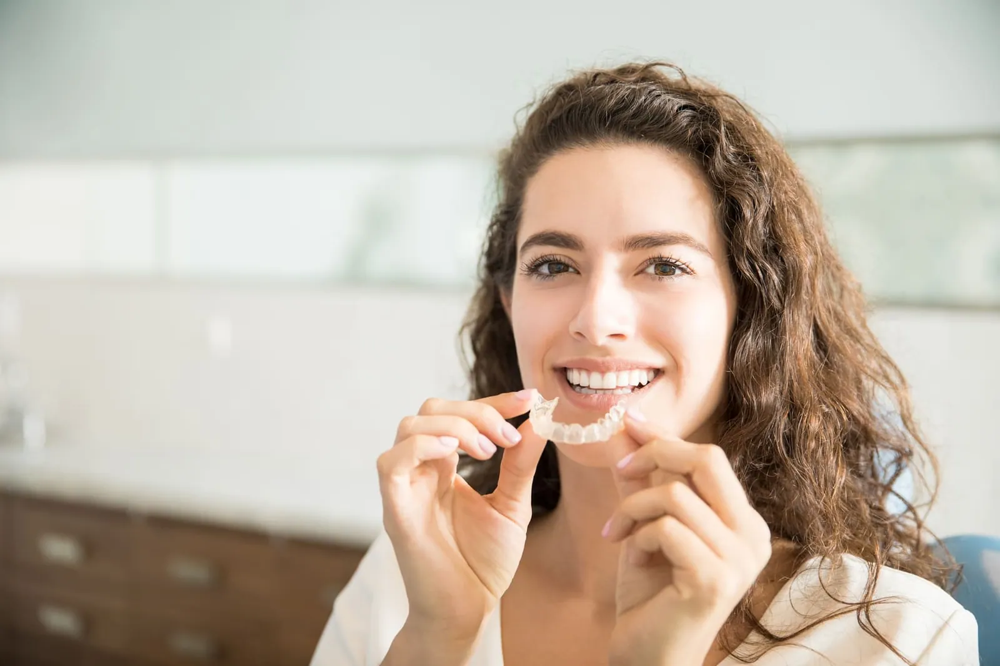
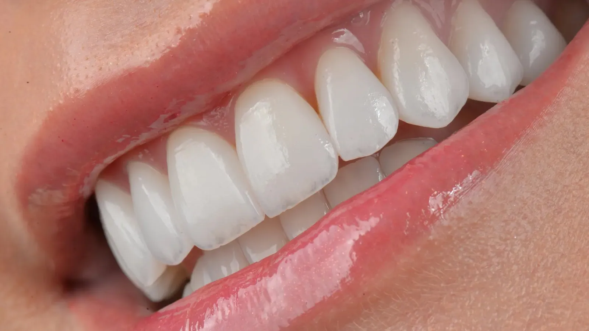

Alinhamento e mordida
Ortodontia e aparelhos
Correção da posição dos dentes e da mordida com técnicas modernas e planejamento digital, para um tratamento mais previsível.
Para quem é indicado
- Dentes tortos ou apinhados
- Mordida desalinhada
- Dificuldade para higienizar dentes encavalados
- Adultos que nunca usaram aparelho
Por que alinhar os dentes
Higiene
Dentes e mordidas tortas são mais difíceis de escovar e limpar.
Mordida
Uma mordida bem ajustada distribui melhor as forças da mastigação. Quando há dor na ATM, a avaliação define se a ortodontia faz parte do tratamento.
Estética
Dentes bem posicionados deixam o sorriso mais harmônico.
O que usamos na clínica
Alinhadores transparentes
Alternativa estética e confortável ao aparelho fixo.
Scanner intraoral
Imagens digitais em 3D, com alta precisão e sem massa de moldagem.
Planejamento digital
Software que simula o tratamento e aumenta a previsibilidade.
Braquetes autoligados
Sem borrachinhas, com menos atrito entre fio e braquete.
Fios de nitinol
Liga de níquel e titânio, elástica, que alinha os dentes com eficiência.
Mini-implantes
Ancoragem temporária que ajuda em movimentos mais complexos.
Contenções
Fixas ou removíveis, mantêm os dentes na nova posição depois do tratamento.
Quem cuida de você
Quem atende neste tratamento
Ótimo lugar para tratamento ortodôntico, profissionais de ponta.
Perguntas frequentes
Adulto pode usar aparelho?
Pode. Não existe idade limite para a ortodontia, desde que dentes e gengiva estejam saudáveis.
Qual a diferença do aparelho autoligado?
Ele dispensa as borrachinhas que prendem o fio. Com menos atrito, os movimentos podem ser mais eficientes, mas a duração depende principalmente do caso.
Preciso usar contenção depois?
Sim. A contenção mantém os dentes na posição conquistada. O tipo e o tempo de uso são definidos ao final do tratamento.
Quanto custa?
O valor depende do que cada caso precisa. Na consulta de avaliação, o dentista examina, explica as opções e você recebe um orçamento claro antes de decidir. A Ichiban não trabalha com convênios: o atendimento é particular.
Veja também
Tratamentos relacionados

Invisalign
Alinhadores transparentes, removíveis e planejados em 3D.
Conhecer o tratamento
Ronco e apneia do sono
Placa sob medida, indicada após diagnóstico médico do sono.
Conhecer o tratamento
Lentes de contato dental
Laminados cerâmicos ultrafinos para corrigir cor, forma e proporção dos dentes.
Conhecer o tratamentoPrimeira consulta
Solicite seu agendamento
Envie sua solicitação pelo site a qualquer hora ou fale com a recepção pelo WhatsApp. O horário é confirmado pela recepção.
- EndereçoRua Canudos, 129
Jardim Higienópolis · Londrina – PR - HorárioSegunda a sexta: 8h às 12h · 13h30 às 18h
Sábado: 8h às 12h - Telefone(43) 3027-5101
- ConvêniosAtendimento particular, com orçamento claro